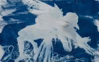

Helena Celewicz: Fundamentally Human
Helena Celewicz’s show titled, ‘Fundamentally Human’ features portraits that explore the inner complexities that live within all of us; where contradictions and paradoxes coexist. Celewicz explains, “…these internal landscapes are where humans are most bold and vulnerable, peaceful and anxious, undefined and yet unmistakably, most ourselves.”